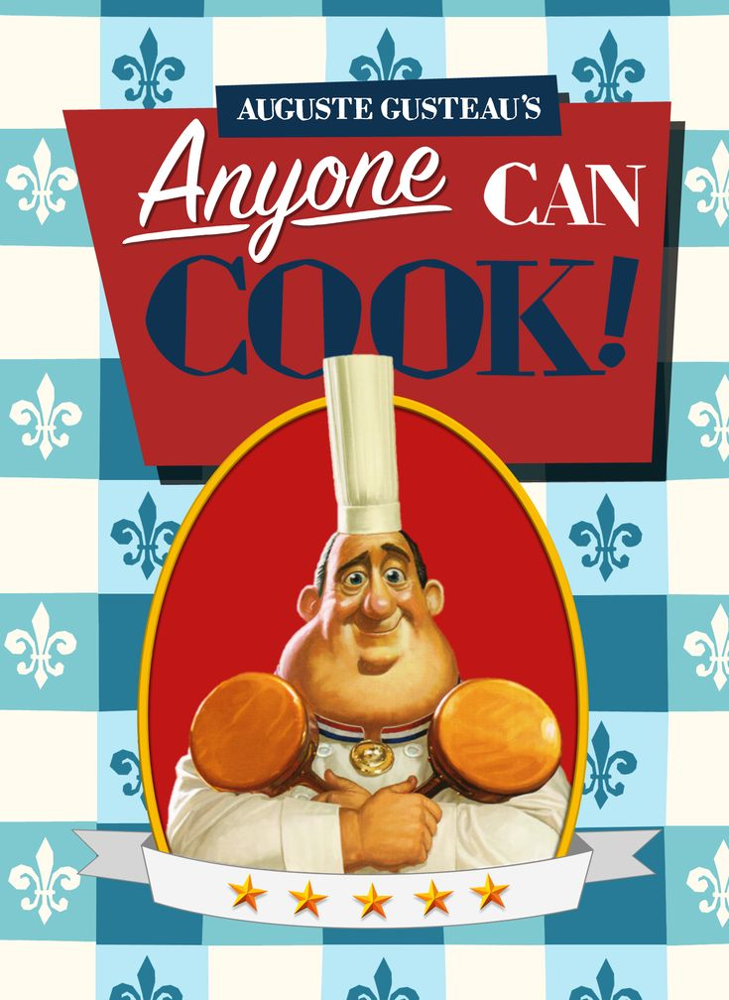
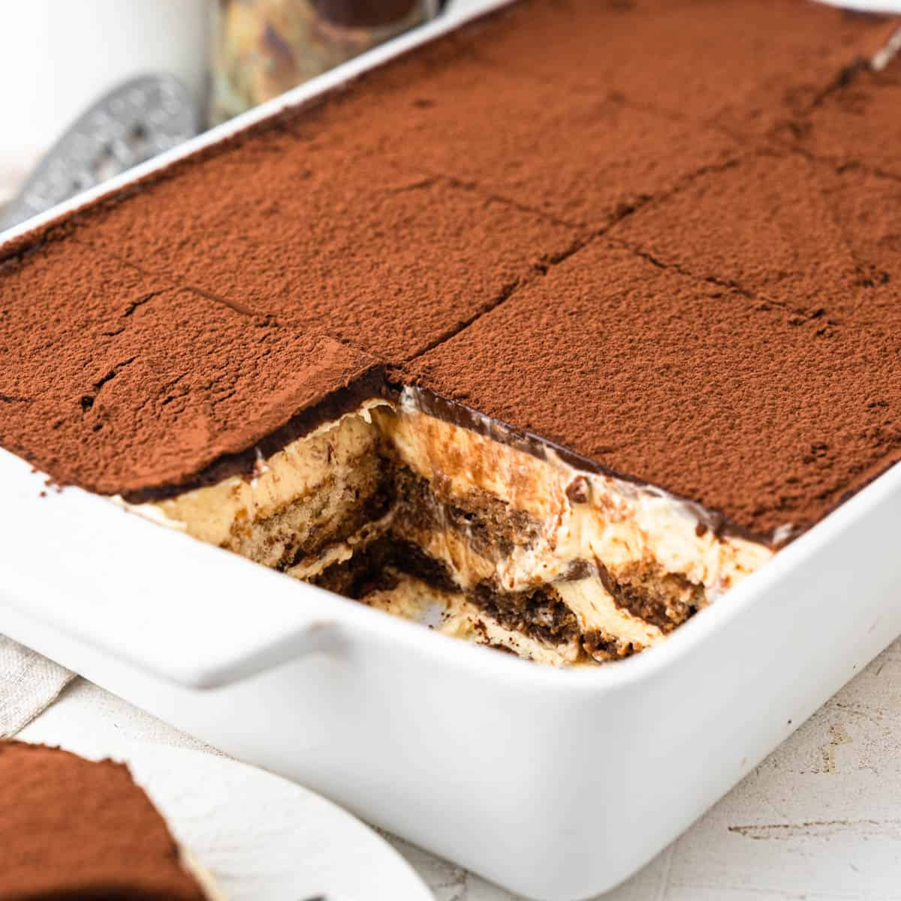
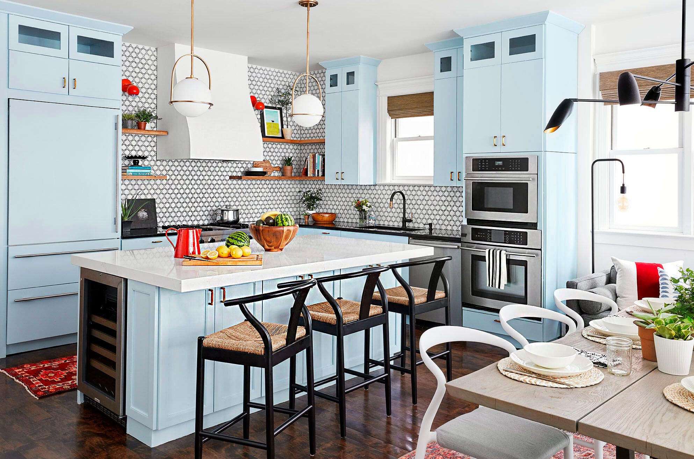
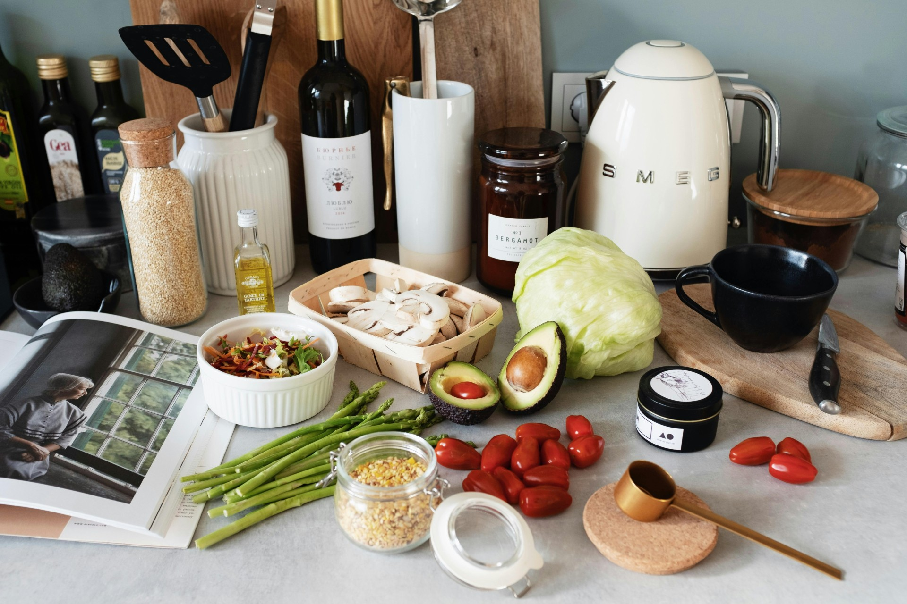

What is cooking?
What is cooking? Well, as defined by the Merriam-Webster dictionary, cooking is "the process of preparing food for consumption, typically by applying heat to change its chemical composition, flavor, and texture, making it more digestible and safe to eat." While that is the definition of cooking, is that what cooking truly is? Yes and no, because cooking is different for everyone! For some people, cooking is simply a way to prepare meals and provide nourishment for themselves and others. For others, it is a creative activity that allows them to experiment with flavors, ingredients, and techniques to create something unique. Cooking can also be a cultural experience, connecting people to traditions, family recipes, and shared meals that bring people together.
Is it cooking?
Look at the food listed and answer if that item would be considered cooking something!
| Food | Is is cooking? |
|---|---|
| Burnt Toast | Technically yes, even though it is burnt |
| Pasta | Yes, this would be cooking |
| Unboiled Potatoes | No, because this is the ingrediant, not the finished product |
Who can cook?
The age-old question of “Who can cook?” has been asked for many years. Well, as Auguste Gusteau says in the 2007 animated film Ratatouille, “Anyone can cook!” This statement reflects the idea that cooking is not limited to professional chefs or people who attend culinary schools. While not everyone will become a great and famous chef, the ability to cook is something that anyone can learn and develop over time. Some people may discover a natural talent for cooking, while others improve through practice, patience, and experimentation in the kitchen.

About Me!
Hi! My name is Ian Skinner, I am a Computer Science student at UNC Charlotte with a concentration in Cybersecurity. I have been cooking for about 10-11 years and have made various dishes from various cultures using recipes I found online.
| Favorite Recipes | Skill Level (1-3 Stars) |
|---|---|
| Bolognese Sauce | ⭐ ⭐ ⭐ |
| Snickerdoodles | ⭐ |
| Tiramisu | ⭐ ⭐ |
When can we cook?
You can cook whenever you would like, as long as you properly manage your time and have the ingredients you need. Cooking often requires planning ahead, especially if a recipe includes several steps or preparation before the actual cooking begins. Some recipes require time and work before you even start applying the ingredients, such as washing, cutting, or measuring them. Other recipes may require additional time after the cooking process, such as letting food cool, rest, or set before it can be served.

Example Weekly Schedule
| Sunday | Monday | Tuesday | Wednesday | Thursday | Friday | Saturday |
|---|---|---|---|---|---|---|
| Cook Food | Cook Rest of Food (if needed) | Break Day | Look at Recipies | List of Chosen Recipies | Grocery Shopping | Preparing Food |
Where do we cook?
You usually cook in a kitchen! It doesn't have to be a grand or large space; a small and simple area will work just as well. Many people cook in kitchens of all different sizes, from spacious professional kitchens to small apartments with limited counter space. What truly matters is having a place where you can safely prepare and cook your food. All you really need are the tools required to make your food and a kitchen to make it in. Basic tools such as pots, pans, knives, and utensils can go a long way in helping you prepare a wide variety of meals.

Best Places to Cook
- Stove
- Oven
- Outdoor Grill
- Smoker
- Over a fireplace
How do we cook?
To cook, you only really need two main things: the recipe and the necessary tools (i.e., spatulas, pans, knives) to help you create it. A recipe provides the instructions and ingredients needed to make a specific dish, guiding you step by step through the cooking process. It helps ensure that the right ingredients are used and that they are prepared in the correct order so the final dish turns out the way it is intended. Once we have those things, all we need to do is follow the steps provided in the recipe on how to create the dish and use our tools to assemble the food being made. The tools help with important tasks such as mixing ingredients, cutting vegetables, stirring sauces, or cooking food evenly in a pan. Each tool has a purpose that makes the cooking process easier and more efficient.

How to prepare for cooking your dish
- Find a recipe you want to cook!
- Buy the ingrediants and any items you need for it that you don't have.
- Prepare your ingrediants according to what the recipe says.
- Assemble your dish!
Why do we cook?
People have many different reasons as to why they cook. Some do it for fun, some do it professionally, and some do it simply because they need to eat and would rather not order Chinese takeout every night. Cooking can serve many purposes in people's lives, whether it is a hobby, a career, or just a daily responsibility. For some individuals, cooking is an enjoyable activity that allows them to relax, be creative, and experiment with different flavors and ingredients. For others, cooking may be a professional skill used in restaurants, bakeries, or other food-related careers. Cooking can also be as simple as heating up a microwavable meal or as elaborate as preparing a large holiday dinner like Thanksgiving.
Reasons why I cook
- Food is a way I can express my creativity and kindness.
- I enjoy the satsifaction in creating a difficult dish and knowing I can do it.
- It's a good way for me to decompress and calm myself.
- I also just enjoy eating food. I'm a foodie through and through!
AI Prompts
This section contains prompts used in AI!
ChatGPT Model was used to generate these prompts
Prompt: What is cooking? Well, as defined by the Merriam-Webster
dictionary, cooking is "the process of preparing food for
consumption, typically by applying heat to change its chemical
composition, flavor, and texture, making it more digestible and safe
to eat." While that is the definition of cooking, is that what
cooking truly is? Yes and no, because cooking is different for
everyone!
How do I make this longer?
Prompt: You can cook whenever you'd like, as long as you properly
manage your time and have the ingrediants you need. Some recipes
will require time and work before you apply ingredients and after it
is done. It's all about how much time the recipe needs and what
ingrediants it requires. Depending on those factors, it will either
legthen or shorten how much time to reciepe will take and when the
best time will be to do it.
How do I make this longer?
Prompt: What is cooking? Well, as defined by the Merriam-Webster
dictionary, cooking is "the process of preparing food for
consumption, typically by applying heat to change its chemical
composition, flavor, and texture, making it more digestible and safe
to eat." While that is the definition of cooking, is that what
cooking truly is? Yes and no, because cooking is different for
everyone!
How do I make this longer?
Prompt: You usually cook in a kitchen! It doesn't have to be this
grand and large space, a small and simple space will work just as
fine. All you need are the tools to make your food and a kitchen to
make it in!
How do I make this longer?
Prompt: To cook, you only really need two things. The recipe and the
necessary tools (i.e spatulas, pans, knives) to help you create it.
Once we have those things, all we need to do is follow the steps
provided on the recipe on how we create it and use our tools to
assemble the food being made.
How do I make this longer?
Prompt: People have many different reasons as to why they cook. Some
do it for fun, some do it professionally, some do it because they
need to eat food and don't want chinese takeout. Cooking can be as
simple as a microwavable meal to as elaborate as a thanksgiving
dinner.
How do I make this longer?
Prompt: (My html page code uploaded with prompt)
I need the nav to make so only one section is shown when clicked.
Where "What" is the default page